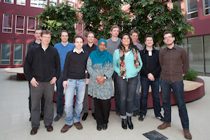

ZEUS Workshop 2013
Fifth Central European Workshop on Services and their Composition
February 21-22, 2013, Rostock, Germany
Program
Thursday, February 21, 2013
- 10:00 Registration and Welcome Coffee
- 11:00 Opening
- 11:05 Session 1
Thomas Heinze, Wolfram Amme and Simon Moser. Control Flow Unfolding of Workflow Graphs Using Predicate Analysis and SMT Solving
Sebastian Wagner, Oliver Kopp and Frank Leymann. Consolidation of Interacting BPEL Process Models with Fault Handlers
- 12:15 Lunch Break
- 13:20 Session 2
Jörg Becker and Dominic Breuker. Business Process Mining for Collaborative Service-Oriented Systems – “Duality” of Process Representations and the Need for Statistical Treatment
Nico Herzberg and Andreas Meyer. Improving Process Monitoring and Progress Prediction with Data State Transition Events
- 14:30 Coffee Break
- 14:50 Session 3
Johannes Wettinger, Oliver Kopp and Frank Leymann. Improving Portability of Cloud Service Models Relying on Script-Based Service Deployment
Christoph Demont, Uwe Breitenbücher, Oliver Kopp, Frank Leymann and Johannes Wettinger. Towards Integrating TOSCA and ITIL
- 17:00 Coffee Break and end of Thursday's scientific program
- 18:30 City Walk Rostock (meeting at the well of Neuer Markt)
- 20:00 Workshop Dinner at Restaurant Lenk's
Friday, February 22, 2013
- 9:30 Good morning coffee
- 10:00 Session 4
Thomas Prinz. Fast soundness verification of workflow graphs
Matthias Geiger and Guido Wirtz. Detecting Interoperability and Correctness Issues in BPMN 2.0 Process Models
- 11:05 Coffee Break
- 11:20 Session 5
Abeer Elsafie, Christian Mainka and Jörg Schwenk. A new approach for WS-Policy Intersection using Partial Ordered Sets
Evellin Cardoso. Goal-Oriented Enterprise Architecture Analysis
- 12:25 Closing Session and Best Presentation Award
- 12:45 Lunch
- 13:45 Trip to the Baltic Sea in Warnemünde

Workshop
Local Organizers
Proceedings